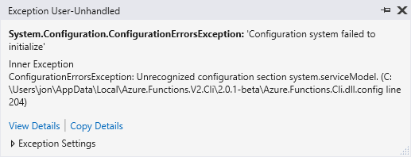
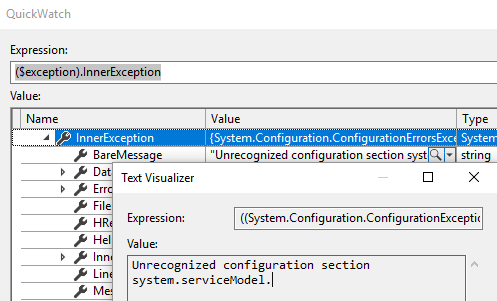
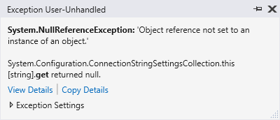
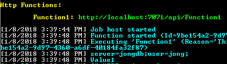
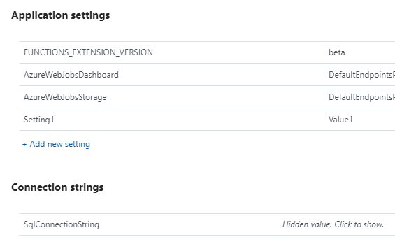
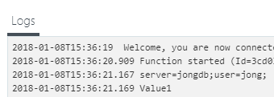
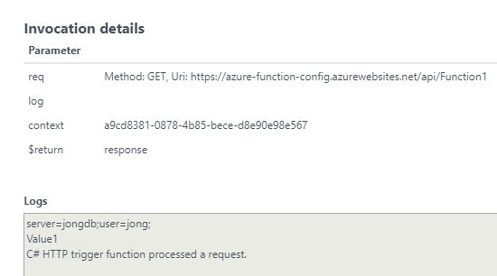
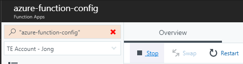

You may have noticed that ConfigurationManager is not available in Azure Functions v2 .NET Standard projects. It’s no longer supported. AF v2 now uses ASPNET Core Configuration. If you add the System.Configuration.ConfigurationManager NuGet package and try to use it you will see the following error:
[1/7/2018 1:50:51 PM] System.Private.CoreLib: Exception while executing function: Function1.
System.Configuration.ConfigurationManager: Configuration system failed to initialize.
System.Configuration.ConfigurationManager: Unrecognized configuration section system.serviceModel.
(C:\Users\jon\AppData\Local\Azure.Functions.V2.Cli\2.0.1-beta\Azure.Functions.Cli.dll.config line 204).


If you remove system.serviceModel from Azure.Function.Cli.dll.config you will see a generic Object reference not set to an instance of an object error.

The bottom line is that ConfigurationManager is no longer supported, you have to use the new ASPNET Core Configuration system.
Here’s how to do that in Azure Function v2.
The code for this post can be found here: https://github.com/jongio/azure-function-config
-
If you added the System.Configuration.ConfigurationManager NuGet package, then remove it.
-
Make sure you include “ConnectionStrings” in your local.settings.json file
{ "IsEncrypted": false, "Values": { "AzureWebJobsStorage": "UseDevelopmentStorage=true", "AzureWebJobsDashboard": "UseDevelopmentStorage=true" }, "ConnectionStrings": { "SqlConnectionString": "server=jongdb;user=jong;" } } -
Include the following using statement:
using Microsoft.Extensions.Configuration; -
Add a 3rd parameter to your Run method of type ExecutionContext
public static async Task<HttpResponseMessage> Run(InputMessage req, TraceWriter log, ExecutionContext context) -
Init a new
ConfigurationBuilderclassvar config = new ConfigurationBuilder() .SetBasePath(context.FunctionAppDirectory) .AddJsonFile("local.settings.json", optional: true, reloadOnChange: true) .AddEnvironmentVariables() .Build();FunctionAppDirectory sets the directory to find your local.settings.json file. Set
optionalto true because we won’t have the file when we deploy. AddEnvironmentVariables will pick up both App Settings and Connection Strings from Azure settings. -
Access Connection Strings:
var cstr = config.GetConnectionString("SqlConnectionString"); -
Access AppSettings
var setting1 = config["Setting1"];The Configuration framework will convert your “Values” settings in local.settings.json to AppSettings and you can include by just the name without prefixing with “Values:”
-
Run Locally
When you run locally, you’ll see the output in the console window.
-
Run in Azure
First, update your AppSettings and ConnectionString settings to includeSetting1andSqlConnectionString
Then when you run the app from Azure, you’ll see the following in your logs:


You can also use Strongly Typed classes for your configuration. Here’s a good blog that shows you how to do that: Using strongly typed configuration in .NET Core console app
As an aside, when you republish your Azure Function v2 app, you’ll need to stop it first.

Let me know if you run into any issues.
Jon